Transducers & Instrumentation
Module 2 — Kinematics and Kinetics
Christian Medical College Vellore · Department of Bioengineering
Human movement mechanics
Movement is what nervous systems are for
Everything a living organism does to the world, it does by moving.
“We have a brain for one reason and one reason only, and that’s to produce adaptable and complex movements.”
“Movement is the only way you have of affecting the world around you.”
— Daniel Wolpert, The real reason for brains, TEDGlobal 2011
Polycarpa aurata, Komodo. Nick Hobgood, CC BY-SA 3.0, via Wikimedia Commons
Wolpert’s evidence: the sea squirt swims until it finds a rock, attaches permanently, and then resorbs most of its own nervous system. Movement over, brain no longer worth its metabolic cost.
A significant amount of anatomical and physiological resources are dedicated to movement production: joints, muscles, skin, eyes, vestibular system, and the brain.
Various neurological and musculoskeletal conditions can impair healthy movement.
Movement is what nervous systems are for
Everything a living organism does to the world, it does by moving.
“Unhealthy” or “abnormal” movements can be a:
- diagnostic sign — bradykinesia is the mandatory criterion for Parkinson’s disease 1
- early biomarker — gait slowing precedes the diagnosis of mild cognitive impairment; gait abnormality predicts non-Alzheimer’s dementia 2
- disease progression — 6-minute walk distance tracks decline in Duchenne muscular dystrophy; SARA scores track ataxia severity over time 3
- rehabilitation target — movement itself is the intervention, and the outcome (Queen Square programme) 4
1 Postuma et al. Mov. Disord. 30, 1591 (2015).
2 Buracchio et al. Arch. Neurol. 67, 980 (2010); Verghese et al. NEJM 347, 1761 (2002).
3 McDonald et al. Muscle Nerve 41, 500 (2010); 48, 343 (2013); Schmitz-Hübsch et al. Neurology 66, 1717 (2006).
4 Ward et al. J. Neurol. Neurosurg. Psychiatry 90, 498 (2019).
What do we measure in a movement?
Parameters of interest in movements
We are interested in two aspects when dealing with measuring movements:
- Kinematics — the description of motion without considering the forces that cause it
- Kinetics — the study of the forces that cause or accompany motion
We will start the module with kinematics, followed by kinetics.
We will focus on:
- What to measure?
- How to measure?
- Basic instrumentation.
- What do the numbers mean?
These numbers must allow us to see beyond our visual observations — more accurate, more precise, and more sensitive information.
Movement kinematics
Describing movements with numbers
Movement description beyond words
Movements are changes in the position of an object of interest over time.
Position is a vector quantity describing the spatial location of an object with respect to a chosen reference frame.
A reference frame is two independent choices: an origin \(O_{A}\) (where \(x=0\) sits) and a basis \(\v{x}_{A}\) (a direction and a length).
With respect to this reference frame \(A\), the positions of particles \(P_1\) and \(P_2\) are given as follows, \[ \v{r}_1^{A} = \m{3.2} \qquad \v{r}_2^{A} = \m{-1.5} \]
where \(\v{r}_{1}^{A}, \v{r}_2^{A} \in \mathbb{R}\). The superscript \(A\) says the position is expressed in reference frame \(A\); the subscripts \(1\) and \(2\) are the particle numbers. A subscript also labels the frame’s own parts, e.g. \(O_A\). The numbers are the coefficients of \(\v{r}\) in the basis of that frame, which here is just \(\v{x}_{A}\).
Who decides the reference frame?
Why did we choose one reference frame over another?
Anyone! We choose what is natural and convenient for the problem at hand.
Both the origin and the basis are fair game.
In this course, we will only choose an orthonormal basis — basis vectors have unit length and are mutually orthogonal.
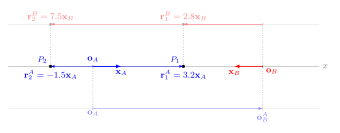
Reference frame \(B\) is translated and rotated with respect to reference frame \(A\). Every point in the 1D space can be represented in either frame, but the numbers will be different.
Changing between reference frames
How do we change between reference frames?
Points \(P_1\) and \(P_2\) in the two reference frames.
\[\begin{matrix} \v{r}_1^{A} = \m{3.2} & \v{r}_2^{A} = \m{-1.5} \\ \v{r}_1^{B} = \m{2.8} & \v{r}_2^{B} = \m{7.5} \end{matrix} \]
How are these numbers related?
Requires us to do vector addition and scaling.
Changing between reference frames
How do we change between reference frames?
Vector Addition and Scaling in 1D:
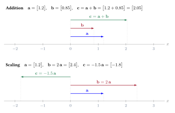
Changing between reference frames
How do we change between reference frames?
Magnitude of a vector: Also referred to as the 2-norm, Euclidean norm, or length of a vector.
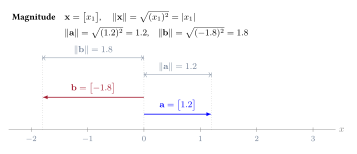
Changing between reference frames
How do we change between reference frames?
Standard Inner Product between two vectors.
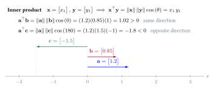
Changing between reference frames
How do we change between reference frames?
Two pieces of information to change between reference frames:
Rotation of the basis of the target (\(B\)) w.r.t. the base frame (\(A\)). Represented by a rotation matrix \(\v{R}_{B}^{A}\).
Translation of the origin of the target frame (\(B\)) w.r.t. the base frame (\(A\)), represented in the base frame. Represented by a translation vector \(\v{o}_{B}^{A}\).
Changing between reference frames
Rotation Matrix
Rotation Matrix: \(\v{R}_{B}^{A} \in \mathbb{R}^{1 \times 1}\) — Represents what the basis vectors of the frame \(B\) (subscript) look like in the frame \(A\) (superscript).
\[ \v{R}_{B}^{A} = \m{\v{x}_{A}^\top \v{x}_{B}} \]
In the above example, \(\v{R}_{B}^{A} = \m{-1}\), because \(\Vert \v{x}_A \Vert = 1\), \(\Vert \v{x}_B \Vert = 1\) and \(\theta = 180^\circ\).
Changing between reference frames
Translation Vector
Translation Vector: \(\v{o}_{B}^{A} \in \mathbb{R}^{1 \times 1}\) — Represents the position of the origin of the frame \(B\) (subscript) in the frame \(A\) (superscript). In the above example, \(\v{o}_{B}^{A} = \m{6}\).
The full description of the reference frame \(B\) w.r.t. the reference frame \(A\) is given by the pair \(\left( \v{R}_{B}^{A}, \v{o}_{B}^{A} \right)\).
This pair can be used to transform any vector expressed in frame \(B\) to frame \(A\).
Changing between reference frames
Going back and forth between frames
Given the pair \(\left( \v{R}_{B}^{A}, \v{o}_{B}^{A} \right)\), we can transform any vector expressed in frame \(B\) to frame \(A\) using the following equation:
\[ \v{r}_{i}^{A} = \v{R}_{B}^{A} \, \v{r}_{i}^{B} + \v{o}_{B}^{A} \]
Product of a matrix with a vector results in a vector.
In 1D, this product is very simple. We simply multiply the individual elements of the matrix and the vector.
Changing between reference frames
Going back and forth between frames
Given the pair \(\left( \v{R}_{B}^{A}, \v{o}_{B}^{A} \right)\), how do we go the other way around? \(\v{r}_{i}^{A} \mapsto \v{r}_{i}^{B}\).
\[ \v{r}_{i}^{B} = {\v{R}_{B}^{A}}^{-1} \left( \v{r}_{i}^{A} - \v{o}_{B}^{A} \right) = \v{R}_{A}^{B} \v{r}_{i}^{A} + \v{o}_{A}^{B} \]
where, \({\v{R}_{B}^{A}}^{-1} = \v{R}_{A}^{B}\), and \(\v{o}_{A}^{B} = -{\v{R}_{B}^{A}}^{-1}\v{o}_{B}^{A}\).
We obtain \({\v{R}_{B}^{A}}^{-1}\) by inverting the single number in the matrix. So, for the above example, we have, \[ {\v{R}_{B}^{A}}^{-1} = \v{R}_{A}^{B} = \m{\frac{1}{-1}} = \m{-1} \qquad \v{o}_{A}^{B} = -{\v{R}_{B}^{A}}^{-1} \v{o}_{B}^{A} = -\m{-1}\m{6} = \m{6} \]
Changing between reference frames
Going back and forth between frames \(A\) and \(B\)
Given: \(\v{R}_{A}^{B} = \m{-1}\) and \(\v{o}_{A}^{B} = \m{6}\).
Going from \(A\) to \(B\).
\[ P_1: \m{3.2} = \m{-1} \m{2.8} + \m{6} = \m{-2.8} + \m{6} = \m{3.2} \] \[ P_2: \m{-1.5} = \m{-1} \m{7.5} + \m{6} = \m{-7.5} + \m{6} = \m{-1.5} \]
Going from \(B\) to \(A\).
\[ P_1: \m{2.8} = \m{-1} \m{3.2} + \m{6} = \m{-3.2} + \m{6} = \m{2.8} \] \[ P_2: \m{7.5} = \m{-1} \m{-1.5} + \m{6} = \m{1.5} + \m{6} = \m{7.5} \]
Changing between reference frames
Now a third reference frame!
Let’s try a problem by bringing in a third reference frame \(C\).
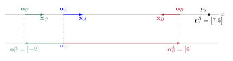
- Find the pair \(\left( \v{R}_{C}^{A}, \v{o}_{C}^{A} \right)\). \(\longrightarrow \m{1.0}, \m{-2}\)
- Find the pair \(\left( \v{R}_{A}^{C}, \v{o}_{A}^{C} \right)\). \(\longrightarrow \m{1.0}, \m{2}\)
- Find \(\v{r}_{3}^{B}\). \(\longrightarrow \m{-1.5}\)
- Find \(\v{r}_{3}^{C}\). \(\longrightarrow \m{9.5}\)
- Find the pair \(\left( \v{R}_{C}^{B}, \v{o}_{C}^{B} \right)\). \(\longrightarrow \m{-1.0}, \m{8}\)
- Find the pair \(\left( \v{R}_{B}^{C}, \v{o}_{B}^{C} \right)\). \(\longrightarrow \m{-1.0}, \m{8}\)
Describing movements with numbers in 2D
Movement description in 2D
In the 2D real plane, we can represent the position of individual points using two numbers after we choose a reference frame — origin and basis vectors.
Reference frame \(A\): origin \(\v{o}_{A}\) and orthonormal basis \(\{ \v{x}_A, \v{y}_A \}\), where \(\Vert \v{x}_{A} \Vert = \Vert \v{y}_{A} \Vert = 1\) and \(\v{x}_{A}^\top \v{y}_{A} = 0\).
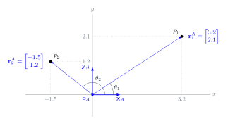
Points in the plane are represented as column vectors \(\v{r}_i^{A} \in \mathbb{R}^2\) w.r.t. the reference frame \(A\). \[ \v{r}_{1}^{A} = \m{ r_{11}^A \\ r_{12}^A} = \m{ \v{x}_A^\top \v{r}_1^{A} \\ \v{y}_A^\top \v{r}_1^{A}} = \m{ \Vert \v{x}_A \Vert \Vert \v{r}_1^{A} \Vert \cos \left( \theta_1 \right) \\ \Vert \v{y}_A \Vert \Vert \v{r}_1^{A} \Vert \sin \left( \theta_1 \right)} = \m{ \Vert \v{r}_1^{A} \Vert \cos \left( \theta_1 \right) \\ \Vert \v{r}_1^{A} \Vert \sin \left( \theta_1 \right)} \]
Describing movements with numbers in 2D
Vector addition in 2D
Vector addition in \(\mathbb{R}^2\)
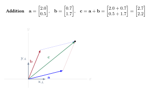
Describing movements with numbers in 2D
Vector scaling in 2D
Vector scaling in \(\mathbb{R}^2\)
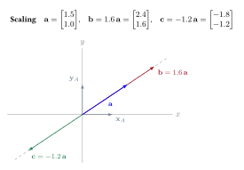
Describing movements with numbers in 2D
Movement description in 2D
The representation of \(P_1\) and \(P_2\) in reference frame \(A\) is \(\v{r}_{1}^{A} = \m{3.2 \\ 2.1}\) and \(\v{r}_{2}^{A} = \m{-1.5 \\ 1.2}\), respectively.
The following is what these numbers mean:
\[ \v{r}_{1}^{A} = 3.2 \v{x}_A + 2.1 \v{y}_A \qquad \qquad \v{r}_{2}^{A} = -1.5 \v{x}_A + 1.2 \v{y}_A\]
Different reference frames in 2D
Reference frame sharing the origin
Consider a second reference frame \(B\) shown in the figure. Both these reference frames share the same origin, but are rotated with respect to each other.
Note: \(\Vert \v{x}_{B} \Vert = \Vert \v{y}_{B} \Vert = 1\) and \(\v{x}_{B}^\top\v{y}_{B} = 0\).
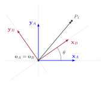
The rotation of frame \(B\) with respect to frame \(A\) is given by a \(2 \times 2\) real matrix \(\v{R}_{B}^{A} \in \mathbb{R}^{2 \times 2}\).
\[ \v{R}_{B}^{A} = \m{\v{x}_{B}^{A} & \v{y}_{B}^{A}} = \m{\v{x}_{A}^\top \v{x}_{B} & \v{x}_{A}^\top \v{y}_{B} \\ \v{y}_{A}^\top \v{x}_{B} & \v{y}_{A}^\top \v{y}_{B}}\]
\[ \v{R}_{B}^{A} = \m{ \cos\left( \theta \right) & -\sin\left( \theta \right) \\ \sin\left( \theta \right) & \cos\left( \theta \right) }\]
Representation of \(P_1\) in reference frames \(A\) and \(B\) are \(\v{r}_{1}^{A}\) and \(\v{r}_{1}^{B}\), respectively. \[ \v{r}_{1}^{A} = \m{r_{11}^{A} \\ r_{12}^{A}} \qquad \v{r}_{1}^{B} = \m{r_{11}^{B} \\ r_{12}^{B}} \qquad \v{r}_{1}^{A} = \v{R}_{B}^{A} \, \v{r}_1^{B} \]
The linear algebra we need
Vectors, matrices and a few of their operations
Vectors \(\mathbb{R}^n\) are an ordered collection of real numbers \(\mathbb{R}\). We will also write them as a column and call them column vectors.
\[ \v{x} = \m{x_1 \\ x_2 \\ \vdots \\ x_n} \]
The transpose operation changes a column vector to a row vector and vice versa.
\[ \v{x}^\top = \m{x_1 & x_2 & \cdots & x_n} \qquad \qquad \left(\v{x}^\top\right)^\top = \v{x} \]
Addition and scaling rules and their geometric interpretation are the same as that in \(\mathbb{R}^2\).
2-Norm: Consider a vector \(\v{x} \in \mathbb{R}^n\). \(\Vert \v{x} \Vert = \sqrt{\sum_{i=1}^n x_i^2 }\)
Standard inner product: Consider two vectors, \(\v{x}, \v{y} \in \mathbb{R}^n\).
\[ \v{x}^\top\v{y} = \m{x_1 & x_2 & \cdots & x_n}\m{y_1 \\ y_2 \\ \vdots \\ y_n} = \sum_{i=1}^n x_iy_i = \Vert \v{x} \Vert \Vert \v{y} \Vert \cos \left(\theta\right)\]
where, \(\theta\) is the angle between \(\v{x}\) and \(\v{y}\).
The linear algebra we need
Vectors, matrices and a few of their operations
Matrices \(\mathbb{R}^{p \times q}\) are a rectangular arrangement of numbers \(\mathbb{R}\).
\[ \v{A} = \m{a_{11} & a_{12} & \cdots & a_{1q} \\ a_{21} & a_{22} & \cdots & a_{2q} \\ \vdots & \vdots & \ddots & \vdots \\ a_{p1} & a_{p2} & \cdots & a_{pq}} \in \mathbb{R}^{p \times q}\]
where, \(a_{ij}\) is the component of the matrix in the \(i^{th}\) row and \(j^{th}\) column. When \(p = q\), \(\v{A}\) is a square matrix, else it’s a rectangular matrix.
With this definition, we can think of column vectors as a matrix with a single column, and a row vector as a matrix with a single row.
We can also think of the matrix \(\v{A}\) as a row of column vectors from \(\mathbb{R}^p\).
\[ \v{A} = \m{\v{a}_{1} & \v{a}_{2} & \cdots & \v{a}_{q}} \in \mathbb{R}^{p \times q}\]
where, \(\v{a}_{i} \in \mathbb{R}^p\) is the \(i^{th}\) column of \(\v{A}\).
Transpose of a matrix switches the rows and columns. \(\v{A}^\top \in \mathbb{R}^{q \times p}\).
\[ \v{A}^\top = \m{a_{11} & a_{21} & \cdots & a_{p1} \\ a_{12} & a_{22} & \cdots & a_{p2} \\ \vdots & \vdots & \ddots & \vdots \\ a_{1q} & a_{2q} & \cdots & a_{pq}} \in \mathbb{R}^{q \times p}\]
The linear algebra we need
Vectors, matrices and a few of their operations
Matrix-vector product Let \(\v{A} \in \mathbb{R}^{p \times q}\) and \(\v{x} \in \mathbb{R}^{q \times 1}\). We can define this product as the following,
\[ \mathbb{R}^{p} \ni \v{y} = \v{A}\v{x} = \m{a_{11} & a_{12} & \cdots & a_{1q} \\ a_{21} & a_{22} & \cdots & a_{2q} \\ \vdots & \vdots & \ddots & \vdots \\ a_{p1} & a_{p2} & \cdots & a_{pq}} \m{x_1 \\ x_2 \\ \vdots \\ x_q} = \m{\sum_{i=1}^qa_{1i} x_i \\ \sum_{i=1}^qa_{2i} x_i \\ \vdots \\ \sum_{i=1}^qa_{pi} x_i}\]
We can also view \(\v{A}\v{x}\) as the following,
\[ \v{y} = \v{A}\v{x} = \m{\v{a}_{1} & \v{a}_{2} & \cdots & \v{a}_{q}} \m{x_1 \\ x_2 \\ \vdots \\ x_q} = \sum_{i=1}^q x_i \v{a}_{i}\]
Matrix-Matrix product Let \(\v{A} \in \mathbb{R}^{p \times q}\) and \(\v{B} \in \mathbb{R}^{q \times r}\). Then we can define the product of these two matrices as the following,
\[ \mathbb{R}^{p \times r} \ni \v{C} = \m{c_{11} & c_{12} & \cdots & c_{1r} \\ c_{21} & c_{22} & \cdots & c_{2r} \\ \vdots & \vdots & \ddots & \vdots \\ c_{p1} & c_{p2} & \cdots & c_{pr}} = \v{A}\v{B} = \m{a_{11} & a_{12} & \cdots & a_{1q} \\ a_{21} & a_{22} & \cdots & a_{2q} \\ \vdots & \vdots & \ddots & \vdots \\ a_{p1} & a_{p2} & \cdots & a_{pq}} \m{b_{11} & b_{12} & \cdots & b_{1r} \\ b_{21} & b_{22} & \cdots & b_{2r} \\ \vdots & \vdots & \ddots & \vdots \\ b_{q1} & b_{q2} & \cdots & b_{qr}} \qquad c_{ij} = \sum_{k} a_{ik}b_{kj}\]
Matrix multiplication \(\v{A}\v{B}\) is allowed if and only if the number of columns of \(\v{A}\) equals the number of rows of \(\v{B}\).
Different reference frames in 2D
Let’s do an example
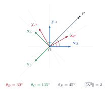
Find the following.
- \(\v{r}_{P}^{A}\). \(\longrightarrow \m{\sqrt{2} \\ \sqrt{2}}\)
- \(\v{R}_{B}^{A}\). \(\longrightarrow \frac{1}{2}\m{\sqrt{3} & -1 \\ 1 & \sqrt{3}}\)
- \(\v{R}_{A}^{B}\). \(\longrightarrow \frac{1}{2}\m{\sqrt{3} & 1 \\ -1 & \sqrt{3}}\)
- \(\v{R}_{C}^{A}\). \(\longrightarrow \frac{1}{\sqrt{2}}\m{-1 & -1 \\ 1 & -1}\)
- \(\v{R}_{A}^{C}\). \(\longrightarrow \frac{1}{\sqrt{2}}\m{-1 & 1 \\ -1 & -1}\)
- \(\v{r}_{P}^{B}\). \(\longrightarrow \frac{1}{2}\m{\sqrt{6}+\sqrt{2} \\ \sqrt{6}-\sqrt{2}}\)
- \(\v{r}_{P}^{C}\). \(\longrightarrow \m{0 \\ -2}\)
- \(\v{R}_{B}^{C}\). \(\longrightarrow \frac{1}{4}\m{\sqrt{2}-\sqrt{6} & \sqrt{6}+\sqrt{2} \\ -\sqrt{6}-\sqrt{2} & \sqrt{2}-\sqrt{6}}\)
- \(\v{R}_{C}^{B}\). \(\longrightarrow \frac{1}{4}\m{\sqrt{2}-\sqrt{6} & -\sqrt{6}-\sqrt{2} \\ \sqrt{6}+\sqrt{2} & \sqrt{2}-\sqrt{6}}\)
Different reference frames in 2D
Let’s now shift the origin
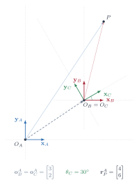
What is \(\v{R}_{B}^{A}\)? \(\longrightarrow \m{1 & 0 \\ 0 & 1} = \v{I}\)
What is \(\v{r}_{P}^{B}\)? \(\longrightarrow \m{1 \\ 4}\)
What is \(\v{R}_{C}^{B}\)? \(\longrightarrow \m{\frac{\sqrt{3}}{2} & -\frac{1}{2} \\ \frac{1}{2} & \frac{\sqrt{3}}{2}}\)
How do we change between reference frames \(A\) and \(B\)? We have rotation and the translation. \(\left( \v{R}_{B}^{A}, \v{o}_{B}^{A}\right)\).
\[ \v{r}_{P}^{A} = \v{R}_{B}^{A} \v{r}_{P}^{B} + \v{o}_{B}^{A} \] \[ \v{r}_{P}^{B} = {\v{R}_{B}^{A}}^{-1} \left( \v{r}_{P}^{A} - \v{o}_{B}^{A} \right) \]
\[\implies \v{R}_{A}^{B} = {\v{R}_{B}^{A}}^{-1} = {\v{R}_{B}^{A}}^{\top} \qquad \v{o}_{A}^{B} = -{\v{R}_{B}^{A}}^{\top}\v{o}_{B}^{A}\]
Different reference frames in 2D
Let’s now shift the origin
What is \(\v{r}_{P}^{C}\) if we know \(\v{r}_P^{B}\)?
We need \(\left( \v{R}_{C}^{B}, \v{o}_{C}^{B}\right) \longrightarrow \v{r}_{P}^{C} = \v{R}_{B}^{C} \left(\v{r}_{P}^{B} - \v{o}_{C}^{B} \right)\)
\[\v{r}_{P}^{C} = \m{\frac{\sqrt{3}}{2} + 2 \\ -\frac{1}{2} + 2\sqrt{3}}\]
What is \(\v{r}_{P}^{C}\) if we know \(\v{r}_P^{A}\)?
We need \(\left( \v{R}_{C}^{A}, \v{o}_{C}^{A}\right)\)
\[\v{R}_{C}^{A} = \v{R}_{B}^{A}\v{R}_{C}^{B} \qquad \v{o}_{C}^{A} = \v{o}_{B}^{A} + \v{R}_{B}^{A} \v{o}_{C}^{B}\]
\[\v{r}_{P}^{C} = \v{R}_{A}^{C}\left(\v{r}_{P}^{A} - \v{o}_{C}^{A}\right)\]
What is \(\v{r}_{P}^{C}\), if \(\v{o}_{C}^{B} = \m{1 \\ 1}\)? \(\v{r}_{P}^{C} = \m{\frac{3}{2} \\ \frac{3\sqrt{3}}{2}}\)
Different reference frames in 2D
Homogeneous Coordinates
\[ \v{r}_{P}^{A} = \v{R}_{B}^{A} \v{r}_{P}^{B} + \v{o}_{B}^{A} \qquad \qquad \v{r}_{P}^{B} = {\v{R}_{B}^{A}}^{\top} \left( \v{r}_{P}^{A} - \v{o}_{B}^{A} \right) \]
Note that rotation is represented by a matrix multiplication operation, while translation is represented by vector addition.
Homogeneous coordinates
We can express this entire transformation through a multiplication operation if we choose the homogeneous coordinate representation.
Let \(\tilde{\v{r}}_{P}^{C}\) be the homogeneous coordinates of the point \(P\) in reference frame \(C\): \(\quad \tilde{\v{r}}_{P}^{C} = \m{\v{r}_{P}^{C} \\ 1}\).
Note that an \(n\)-dimensional vector is represented by an \((n+1)\)-dimensional vector in the homogeneous coordinates.
In the homogeneous coordinates, there are infinitely many ways to represent the same point.
\[\m{x \\ y \\ z \\ 1} \;{\Large\equiv}\; \m{\lambda x \\ \lambda y \\ \lambda z \\ \lambda}\]
Different reference frames in 2D
Homogeneous Transformation
Homogeneous transformation
Both translation and rotation have a matrix representation – homogeneous transformation matrix.
The homogeneous transformation matrix representing frame \(C\) w.r.t. \(A\) is given by, \(\v{H}_{C}^{A} = \m{\v{R}_{C}^{A} & \v{o}_{C}^{A} \\ \v{0} & 1}\)
We can obtain the homogeneous representation of \(P\) in \(A\) from \(\v{r}_{P}^{C}\) as follows,
\[ \tilde{\v{r}}_{P}^{A} = \v{H}_{C}^{A} \tilde{\v{r}}_{P}^{C} \quad \implies \quad \tilde{\v{r}}_{P}^{C} = \v{H}_{A}^{C} \tilde{\v{r}}_{P}^{A} = {\v{H}_{C}^{A}}^{-1} \tilde{\v{r}}_{P}^{A}\]
What is \({\v{H}_{C}^{A}}^{-1}\)? \(\longrightarrow \m{{\v{R}_{C}^{A}}^\top & -{\v{R}_{C}^{A}}^\top \v{o}_{C}^{A} \\ \v{0} & 1}\)
Different reference frames in 3D
Ideas from 2D generalize to 3D
Each coordinate is an inner product: drop a perpendicular onto that axis, and the length you cut off is \(\v{x}_{A}^\top \v{r}_{P}^{A}\).
Different reference frames in 3D
Ideas from 2D generalize to 3D
Two reference frames, rotated and translated with respect to each other. The same point \(P\) — two sets of numbers. Switch which frame the world is drawn in: the picture changes, the numbers do not.
Different reference frames in 3D
Ideas from 2D generalize to 3D
The representation of a reference frame \(B\) w.r.t. \(A\) requires the rotation matrix \(\v{R}_{B}^{A}\) and the translation of the origin \(\v{o}_{B}^{A} \in \mathbb{R}^3\).
\[ \v{R}_{B}^{A} = \m{ \v{x}_{A}^\top \v{x}_B & \v{x}_{A}^\top \v{y}_B & \v{x}_{A}^\top \v{z}_B \\ \v{y}_{A}^\top \v{x}_B & \v{y}_{A}^\top \v{y}_B & \v{y}_{A}^\top \v{z}_B \\ \v{z}_{A}^\top \v{x}_B & \v{z}_{A}^\top \v{y}_B & \v{z}_{A}^\top \v{z}_B} \in \mathbb{R}^{3 \times 3}\]
The transformation between \(A\) and \(B\) is given by the following,
\[ \v{r}_{P}^{A} = \v{R}_{B}^{A} \v{r}_{P}^{B} + \v{o}_{B}^{A} \qquad \qquad \v{r}_{P}^{B} = {\v{R}_{B}^{A}}^{\top} \left( \v{r}_{P}^{A} - \v{o}_{B}^{A} \right) \]
In the homogeneous representation, we have \(\tilde{\v{r}}_{P}^{B} = \m{\v{r}_{P}^{B} \\ 1}\). And the homogeneous transformation matrix \(\v{H}_{B}^{A} \in \mathbb{R}^{4 \times 4}\).
\[\tilde{\v{r}}_{P}^{A} = \v{H}_{B}^{A} \tilde{\v{r}}_{P}^{B} \quad \implies \quad \tilde{\v{r}}_{P}^{B} = \v{H}_{A}^{B} \tilde{\v{r}}_{P}^{A} = {\v{H}_{B}^{A}}^{-1} \tilde{\v{r}}_{P}^{A}\]
Representing kinematics of rigid bodies
How many numbers do we need?
A rigid body is a collection of points whose relative spatial location with respect to each other does not change no matter the forces acting on these points.
Useful approximation for many applications, simplifying representing/analysing kinematics of real objects.
We need a total of 6 numbers to represent its position and orientation w.r.t. a reference frame.
\[ \text{Rigid body in 3D space} \longrightarrow \left( \alpha, \beta, \gamma, x, y, z\right)\]
\(\left(\alpha, \beta, \gamma\right)\) represent the orientation of the body in space, and \(\left(x, y, z\right)\) represents, typically, the position of some point in the rigid body. Once we know these 6 numbers, we know (i.e. can compute) the location of every point in the rigid body.
One of many ways to describe rigid body kinematics in 3D space; all representations need 6 numbers.
These numbers are also referred to as degrees-of-freedom (DOFs).
Representing kinematics of rigid bodies
How many numbers do we need?
Representing kinematics of connected rigid bodies
How many numbers for connected rigid bodies?
If we have two independent rigid bodies in space, how many numbers do we need to describe their kinematics in 3D space? 12
When we say two rigid bodies are connected together, we mean that the two bodies have constraints on how they can move with respect to each other.
Reduces the numbers we need to describe the kinematics of the connected rigid bodies to be lower than 12.
Each constraint on the movements of the two connected bodies reduces the number of DOFs by 1.
\[\text{DOFs of two connected rigid bodies} = 12 - \text{No. of kinematic constraints}\]
We will refer to this connection as a joint, and we can talk about the DOFs of a joint.
\[\text{DOFs of a joint} = 6 - \text{No. of kinematic constraints}\]
The body as connected rigid bodies
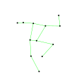
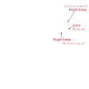
Full body kinematics: Track one body segment and the joint angles of the connected segments.
Individual joint kinematics: Track only the segments connected at the joints.
Measuring Kinematics
How do we measure kinematics?
General approach: track all 6DOFs of each limb segment \(\longrightarrow\) derive the individual joint variables.
- Pros: Full characterisation; Suitable for complex movement behaviors (e.g. gait analysis, upper-limb reaching, object manipulation, etc.).
- Cons: Too much information for simple movements (e.g. knee flexion/extension, elbow range of motion); Complex, expensive tools required.
Joint level approach: track specific joint variables of interest.
- Pros: Simple, compact tools. Focused, relevant information for simple movements.
- Cons: Unsuitable for complex movements.
We will explore sensing tools for both approaches.
- Camera-based motion tracking with markers (standard & fiducial).
- Inertial measurement units
- Optical and magnetic encoders
Camera-based movement tracking

Marker-based motion-capture suit. Image: cgicoffee.com
- Each marker is treated as a dot or point in space.
- \((x_i, y_i, z_i)\) position of the \(i^{th}\) marker estimated from the cameras in a lab-fixed reference frame.
\[ \left(x_i, y_i, z_i \right)_{i=1}^{M} \longrightarrow \left(x_j, y_j, z_j, \alpha_j, \beta_j, \gamma_j \right)_{j=1}^{L} \longrightarrow \left(\theta_k, \phi_k, \chi_k \right)_{k=1}^{J}\]
Camera-based movement tracking
A camera captures the spatial distribution of light arriving from the environment — it records the direction from which light arrives, not the distance it has travelled.
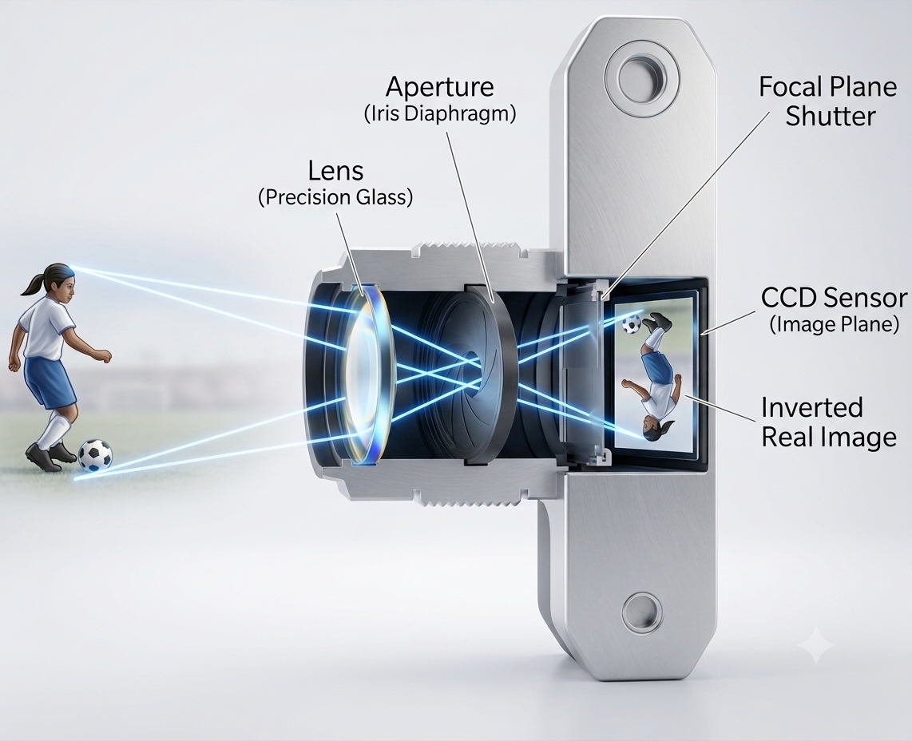
Camera optics produce an image of the world, captured by an image sensor (CCD or CMOS) in digital cameras, or by film in traditional cameras.
An image \(I\left(x, y\right)\) is a 2D distribution of brightness of light. For a camera, the 2D surface is a rectangular region \(\Omega\). \[ I: \Omega \subset \mathbb{R}^2 \mapsto \mathbb{R}_{+}; \quad \Omega \ni \left(x, y\right) \mapsto I\left(x, y\right) \in \mathbb{R}_{+} \]
Image intensity \(I\left(x, y\right)\) at any location \(\left(x, y\right)\) is determined by the amount of light entering the camera through its optical system that directs the light to the image sensor.
Geometry of the optics determines the mapping of the spatial location of a source of light in the world \(\left(x^W, y^W, z^W\right)\) to a spatial location of the image \(\left(x^I, y^I\right)\).
We will primarily focus on the geometry of the optics for the purpose of kinematics tracking using camera image.
Camera-based movement tracking
Physics of a Pinhole Camera
A useful and simplified model of the geometry of a camera’s optics is provided by a pinhole camera.
A box with an infinitesimally small hole that lets only a single ray from each point enter the box.
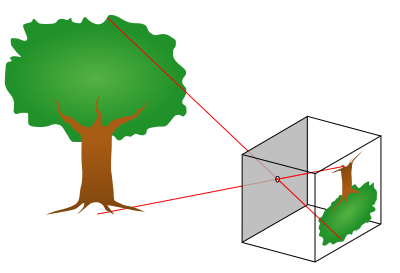
Produces an inverted image of the world on the back wall.
Camera-based movement tracking
Physics of a Pinhole Camera
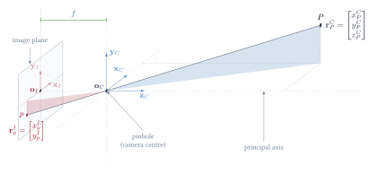
\(P\) in space has coordinates \(\v{r}_P^C = \m{x_P^C & y_P^C & z_P^C}^\top \in \mathbb{R}^3\) w.r.t. the camera reference frame.
\(p\) is the corresponding point in the image with coordinates \(\v{r}_p^I = \m{x_p^I & y_p^I}^\top \in \mathbb{R}^2\) w.r.t. the image reference frame.
\(\mathbf{o}_I\) is principal point of the image, i.e. the point where the optical axis intersects the image plane.
Camera-based movement tracking
Physics of a Pinhole Camera
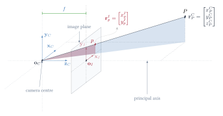
Assume the image plane to be in front of the camera center, then we have,
\[x_p^I = \frac{f}{z_P^C} x_P^C \qquad y_p^I = \frac{f}{z_P^C} y_P^C \implies z_P^C \m{x_p^I \\ y_p^I \\ 1} = \m{f & 0 & 0 & 0\\ 0 & f & 0 & 0\\ 0 & 0 & 1 & 0}\m{x_P^C \\ y_P^C \\ z_P^C \\ 1}\]
Camera-based movement tracking
Physics of a Pinhole Camera
\[x_p^I = \frac{f}{z_P^C} x_P^C \qquad y_p^I = \frac{f}{z_P^C} y_P^C\] \[\v{r}_p^I = \m{x_p^I \\ y_p^I \\ 1} \equiv \m{f x_P^C \\ f y_P^C \\ z_P^C} = \m{f & 0 & 0 & 0\\ 0 & f & 0 & 0\\ 0 & 0 & 1 & 0}\m{x_P^C \\ y_P^C \\ z_P^C \\ 1}\]
We can now split this into two matrices,
\[\m{f & 0 & 0 & 0\\ 0 & f & 0 & 0\\ 0 & 0 & 1 & 0} = \m{f & 0 & 0\\ 0 & f & 0\\ 0 & 0 & 1} \m{1 & 0 & 0 & 0\\ 0 & 1 & 0 & 0\\ 0 & 0 & 1 & 0} = \m{f & 0 & 0\\ 0 & f & 0\\ 0 & 0 & 1} \m{\v{I}_3 & \v{0}}\]
\[\v{r}_p^I = \m{f & 0 & 0\\ 0 & f & 0\\ 0 & 0 & 1} \m{\v{I}_3 & \v{0}} \v{r}_P^C\]
Note: we will drop the \(\,\, \tilde{} \,\,\) symbol for vectors since we will mostly deal with homogeneous coordinates in this section.
Camera-based movement tracking
Physics of a Pinhole Camera
If the point \(P\) is represented with respect to a world coordinate frame \(W\) represented by \(\left( \v{R}_{W}^{C}, \v{o}_{W}^{C}\right)\), then we have,
\[\v{r}_P^C = \m{\v{R}_{W}^{C} & \v{o}_{W}^{C} \\ \v{0} & 1} \v{r}_P^W\]
\[\implies \v{r}_p^I = \m{f & 0 & 0\\ 0 & f & 0\\ 0 & 0 & 1} \m{\v{I}_3 & \v{0}} \m{\v{R}_{W}^{C} & \v{o}_{W}^{C} \\ \v{0} & 1} \v{r}_P^W = \m{f & 0 & 0\\ 0 & f & 0\\ 0 & 0 & 1} \m{\v{R}_{W}^{C} & \v{o}_{W}^{C}} \v{r}_P^W\]
The 6 parameters associated with the transformation between the world \(W\) and the camera \(C\) reference frames are called the extrinsic parameters of the camera.
Camera-based movement tracking
Physics of a Pinhole Camera
Camera-based movement tracking
Physics of a Pinhole Camera
With digital cameras, positions on an image are reported in pixels. Each pixel corresponds to a sensing area on the image plane.
We need to convert from \(\v{r}_p^I\) (e.g. units of mm) to sensor coordinates \(\v{r}_p^S\) in pixels.
The origin and the coordinate axes for the sensor frame \(S\) can be different.
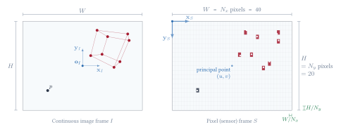
How do we convert from \(\v{r}_p^I\) to \(\v{r}_p^S\)?
Camera-based movement tracking
Physics of a Pinhole Camera
How do we convert from \(\v{r}_p^I\) to \(\v{r}_p^S\)?
\[\v{r}_p^S = \m{s_x & s_{\theta} & 0 \\ 0 & s_y & 0 \\ 0 & 0 & 1} \m{1 & 0 & u \\ 0 & -1 & v \\ 0 & 0 & 1} \v{r}_p^I\]
\[\begin{align} x_p^S &= s_x\left(x_p^I + u\right) + s_\theta \left(-y_p^I + v\right) \\ y_p^S &= s_y\left(-y_p^I + v\right) \end{align}\]
\[\v{r}_p^S = \m{s_x & s_{\theta} & 0 \\ 0 & s_y & 0 \\ 0 & 0 & 1} \m{1 & 0 & u \\ 0 & -1 & v \\ 0 & 0 & 1} \m{f & 0 & 0\\ 0 & f & 0\\ 0 & 0 & 1} \m{\v{R}_{W}^{C} & \v{o}_{W}^{C}} \v{r}_P^W = \v{K}_f \m{\v{R}_{W}^{C} & \v{o}_{W}^{C}} \v{r}_P^W\]
Looks like there are additional 6 parameters associated with the camera itself – \(\left(f, s_x, s_y, s_\theta, u, v\right)\). But there are only 5!
\[\v{K}_f = \m{s_x f & -s_{\theta} f & s_x u + s_\theta v \\ 0 & -s_y f & s_y v \\ 0 & 0 & 1}\]
Camera-based movement tracking
Physics of a Pinhole Camera
Camera-based movement tracking
Physics of a Pinhole Camera
The full camera image formation model for the pinhole camera is given by,
\[\v{r}_p^S = \v{K}_f \m{\v{R}_{W}^{C} & \v{o}_{W}^{C}} \v{r}_P^W, \qquad \v{K}_f = \m{f_x & s & o_{xs} \\ 0 & f_y & o_{ys} \\ 0 & 0 & 1 }\]
where,
- \(f_x\) is the focal length in horizontal pixels.
- \(f_y\) is the focal length in vertical pixels.
- \(s\) is the skew when the sensor’s rows and columns are not perpendicular.
- \(o_{xs}\) is the principal point’s horizontal location in pixels.
- \(o_{ys}\) is the principal point’s vertical location in pixels.
These are the 5 intrinsic parameters of the camera.
We need to know all 11 parameters to know the full mapping from 3D coordinates to image coordinates in pixels.
These are obtained through a camera calibration procedure.
Camera-based movement tracking
Camera distortion
Real cameras are not pinhole cameras. They employ lenses to collect more light for producing brighter images.
Lenses introduce different types of distortions on images. The most common distortions considered are: (a) radial distortion or barrel distortion, and (b) tangential distortion
The distortion acts before the pixel conversion, on the normalised coordinates \(\v{r}_p^N\) — centred on the optical axis and divided by \(z_P^C\), so they carry no units:
\[\m{{x_p^N} \\ {y_p^N}} = \frac{1}{z_P^C}\m{x_P^C \\ y_P^C}, \qquad r^2 = {x_p^N}^2 + {y_p^N}^2\]
\[\v{r}_p^D = \v{f}_d\left( \v{r}_p^N \right) = \underbrace{\left(1 + k_1 r^2 + k_2 r^4 + k_3 r^6\right)\m{{x_p^N} \\ {y_p^N}}}_{\textrm{radial}} + \underbrace{\m{2 p_1 {x_p^N} {y_p^N} + p_2 \left(r^2 + 2{x_p^N}^2\right) \\ p_1\left(r^2 + 2{y_p^N}^2\right) + 2 p_2 {x_p^N} {y_p^N}}}_{\textrm{tangential}}\]
\[\v{r}_p^S = \v{K}_f \, \v{r}_p^D \qquad \textrm{— only now do we get pixels}\]
Camera-based movement tracking
Camera distortion
Camera-based movement tracking
Camera calibration
Camera image formation model \[\v{r}_p^S = \underbrace{\v{K}_f}_{\textrm{5 intrinsic}} \underbrace{\m{\v{R}_{W}^{C} & \v{o}_{W}^{C}}}_{\textrm{6 extrinsic}} \v{r}_P^W = \boldsymbol{\Pi} \v{r}_P^W\]
Intrinsic — properties of the camera itself. Measured once, valid until someone changes the lens or the zoom.
Extrinsic — where the camera is. Changes the moment anyone moves it.
Calibration is how we get numbers in the above model.
The idea behind every method is the same:
- put objects of known geometry in front of the camera.
- find them in the image.
- ask which numbers would have produced the picture we actually got.
Camera-based movement tracking
Camera calibration — Direct Linear Transform
The oldest and simplest approach — solve for all 11 numbers of \(\boldsymbol{\Pi}\) in one step.
You provide
- A 3D object whose points you have measured — a calibration frame or jig.
- At least 6 points, and their positions in the image.
- The points must not all lie on a plane.
The software returns
- \(\boldsymbol{\Pi}\), the whole \(3 \times 4\) matrix, up to scale.
- From which the intrinsics and extrinsics can be separated.
Each point gives two equations — one for its row, one for its column in the image. Six points give twelve, which is enough for eleven unknowns.
Issues with the method
- Requires a measured calibration object with known, non-coplanar points that fill the capture volume — estimates extrapolate poorly outside it.
- Ignores lens distortion — unmodelled distortion biases all 11 parameters.
- Fits 11 free parameters without enforcing the structure of \(\boldsymbol{\Pi} = \v{K}\m{\v{R} \mid \v{o}}\) (orthogonal \(\v{R}\)), so the spare degrees of freedom absorb measurement noise. <!– Revisit in a later version: this is fixed by refinement (as in the fiducial notes §7), unlike the points above.
- Minimises algebraic rather than reprojection error; needs data normalisation to be well-conditioned. –>
Camera-based movement tracking
Camera calibration — Zhang’s method
The method every calibration tool uses. It needs only a flat printed target — no machined 3D rig.
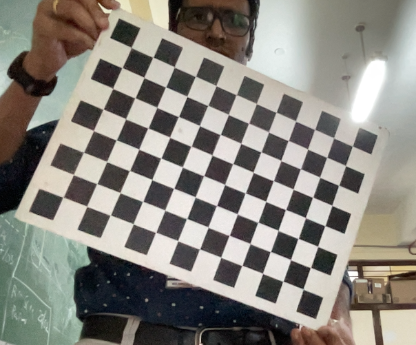
You provide
- A checkered board of known square size.
- Many photographs of it — 15 to 20 — held at different tilts, distances, and positions in the frame.
The software returns
- The 5 intrinsic parameters.
- The distortion parameters \(k_1, k_2, k_3, p_1, p_2\).
- Where the board was in each photograph.
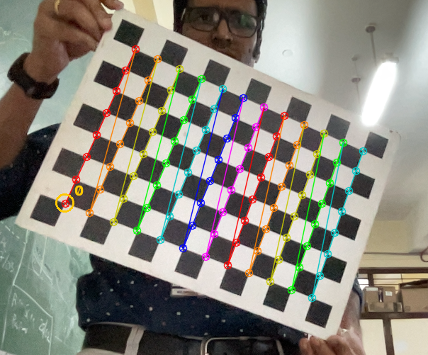
How it decides:
- Positions of the corners on the checkered board are known.
- Detects the corners for the given size; this provides the correspondence between the 3D points and the image points.
- Searches for the set of numbers that best predicts where every corner actually appeared
- Leftover mismatch, in pixels, is the reprojection error.
Camera-based movement tracking
Camera calibration — what to check
Calibration always returns numbers. So the question is never “did it run?” but “should I believe it?”
- Were the boards tilted? Images with the board parallel to the camera carry the same information over and over — the fit becomes ill-conditioned.
- Did the board reach the corners of the frame? Distortion is largest at the edges. Calibrate only from the middle of the image and the distortion parameters are guesswork.
- Was the board actually flat? Paper on a clipboard curls. The method assumes a plane, and a bent target quietly biases every number.
- Is the square size right? Get it wrong and the intrinsics are unaffected, but every distance you go on to measure is scaled by the same factor.
- How large is the reprojection error? Typically well under half a pixel. But a low error on a bad set of images means the model fits those images — not that the camera is characterised.
A small residual is necessary, not sufficient. This is the same lesson as static calibration in Module 1 — the fit quality tells you about the fit, not about the instrument.
Camera-based movement tracking
Single camera inverse problem
Can we estimate the position of points in 3D space from a single camera?
Let’s assume that we have calibrated the camera. \(\v{K}\) is estimated and \(\v{R} = \v{I}\) and \(\v{o} = \v{0}\) assuming camera coordinate is the world coordinate.
Forward problem: 3D point \(\v{r}_P^W\) in world to 2D point in the image \(\v{r}_p^S\). \[\lambda \v{r}_p^S = \v{K}_f \m{\v{I}_3 & \v{0}} \v{r}_P^W\]
\(\lambda > 0\) is an unknown here because we are operating with homogeneous coordinates, and \(\v{r}_p^S = \m{x_p^S \\ y_p^S \\ 1}\).
Inverse problem: Knowing \(\v{r}_p^S\), we would like to find the 3D points that would have produced it.
We can now invert the relationship to find the following,
\[ \v{r}_P^W = \lambda \v{K}_f^{-1} \v{r}_p^S \]
This is the equation of a ray from the camera’s origin, pointing in the direction \(\v{K}_f^{-1} \v{r}_p^S\) !
Camera-based movement tracking
Single camera inverse problem
Camera-based movement tracking
Two cameras can solve the inverse problem
What if we have the image locations of the same point from two or more cameras?
It turns out that you can now solve for the 3D location, as long as the two camera centres do not coincide.
This way there are two rays starting at two different locations, and their intersection is the 3D point of interest!
We, of course, assume the ideal scenario here.
In the real scenario, we can only estimate the location of the 3D point using a least squares approach.
Camera-based movement tracking
Two cameras — the forward problem
Forward problem: 3D point \(\v{r}_P^W\) in world to the 2D points in the two images \(\v{r}_p^{S_A}\) and \(\v{r}_p^{S_B}\) in cameras \(A\) and \(B\), respectively.
Assumption: (a) Camera \(A\) as the world reference frame, and (b) Camera \(A\)’s frame known w.r.t. camera \(B\), \(\left(\v{R}_{A}^{B}, \v{o}_{A}^{B}\right)\).
Then the forward problem is as follows, \[\lambda_a \v{r}_p^{S_A} = \v{K}_{f}^{A} \m{\v{I}_3 & \v{0}} \v{r}_P^W \qquad \lambda_b \v{r}_p^{S_B} = \v{K}_{f}^{B} \m{\v{R}_{A}^{B} & \v{o}_{A}^{B}} \v{r}_P^W \]
\(\lambda_a, \lambda_b > 0\) are unknowns, and \(\v{r}_p^{S_A} = \m{x_p^{S_A} & y_p^{S_A} & 1}^\top, \v{r}_p^{S_B} = \m{x_p^{S_B} & y_p^{S_B} & 1}^\top\)
What are the \(\lambda\) s? These are the depths of the 3D point for each camera!
\(x_p^{S_A}, y_p^{S_A}\) and \(x_p^{S_B}, y_p^{S_B}\): sensor coordinates in the images from cameras \(A\) and \(B\), respectively.
There are 6 equations (3 for each camera) and 5 unknowns \(\left(x_P^W, y_P^W, z_P^W, \lambda_a, \lambda_b\right)\).
Camera-based movement tracking
Two cameras — finding the point
Camera-based movement tracking
Practical issues
Our discussion, thus far, has entirely focused on the ideal scenario.
In practice there are several issues that require careful consideration.
- Spatial sampling of the image plane: the image is recorded on a pixel grid, so a small or thresholded marker moves in pixel-sized steps. Each pixel corresponds to a larger distance in space the further away the marker is — roughly \(z/f\).
- Image sensor noise: noise moves the detected centre from frame to frame, so a still marker appears to jitter.
- Image distortion: removed by calibration — what is left is only as good as the calibration.
- Identification of corresponding points: which blob is which marker, in every camera and every frame? Swapped labels corrupt the data without any warning.
- Temporal synchronization between cameras: unsynchronized cameras see a moving point at different times, so the rays do not meet. The error grows with speed.
Camera-based movement tracking
Human movement tracking setup
When tracking full body kinematics typically interested in:
- Movement of the whole-body centre of mass.
- Relative movement between adjacent bones or joint kinematics.
Tracking kinematics is acheived by placing markers on the individual body segments, tracked using a multi-camera setup.
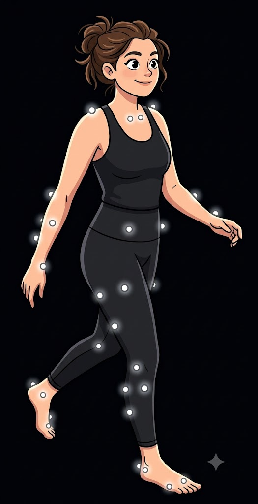
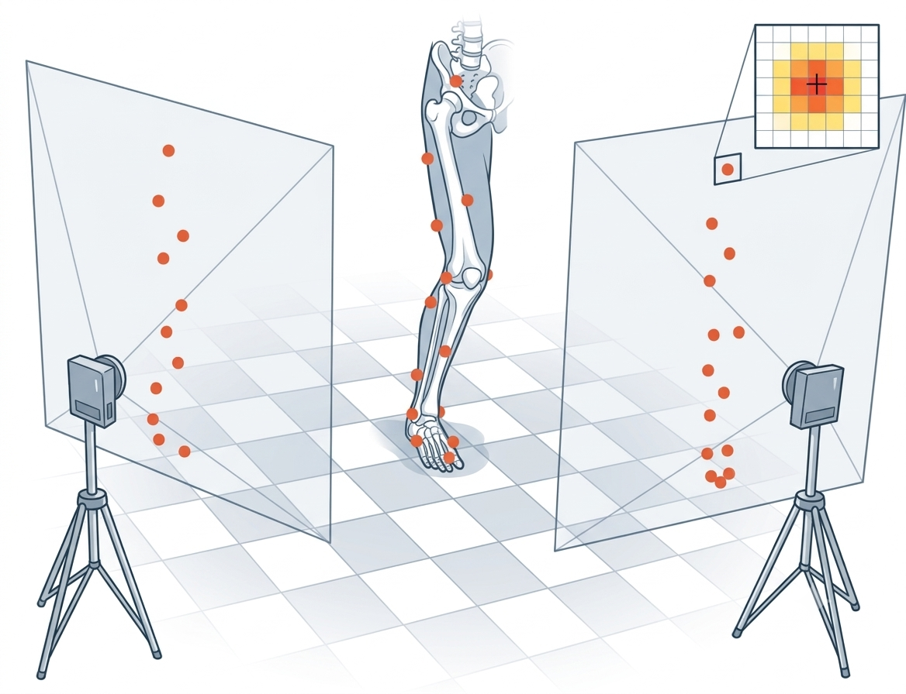
Each rigid body has 3-4 markers to track its pose in 3D.
Camera-based movement tracking
Human movement tracking setup
Each rigid body has 3-4 markers to track its pose in 3D.
Consider three markers \(m_1, m_2\) and \(m_3\) on a rigid body \(B\).
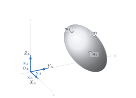
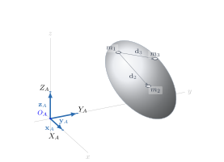
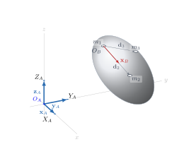
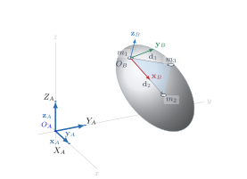
The cameras give \(\v{r}_{m_1}^{A}, \v{r}_{m_2}^{A}, \v{r}_{m_3}^{A}\).
Two vectors in the body \[\v{d}_2 = \v{r}_{m_2}^{A} - \v{r}_{m_1}^{A} \qquad \v{d}_3 = \v{r}_{m_3}^{A} - \v{r}_{m_1}^{A}\]
First axis \(\quad \v{x}_{B}^{A} = \dfrac{\v{d}_2}{\Vert \v{d}_2 \Vert}, \qquad \v{o}_{B}^{A} = \v{r}_{m_1}^{A}\)
Normal to the marker plane \(\quad \v{z}_{B}^{A} = \dfrac{\v{x}_{B}^{A} \times \v{d}_3}{\Vert \v{x}_{B}^{A} \times \v{d}_3 \Vert}\)
Close the frame \(\quad \v{y}_{B}^{A} = \v{z}_{B}^{A} \times \v{x}_{B}^{A}\) \[\v{R}_{B}^{A} = \m{\v{x}_{B}^{A} & \v{y}_{B}^{A} & \v{z}_{B}^{A}}\]
\[\v{o}_{B}^{A} = \v{r}_{m_{1}}^{A}\]
Camera-based movement tracking
Human movement tracking setup
The full 6DOF pose of a rigid body can be tracked with three markers.
\[\v{R}_{B}^{A} = \m{\v{x}_{B}^{A} & \v{y}_{B}^{A} & \v{z}_{B}^{A}} \qquad \v{o}_{B}^{A} = \v{r}_{m_{1}}^{A}\]
6DOF poses of the individual segments give multi-segment kinematics, from which joint kinematics are derived. When we have the rotation matrices \(\v{R}_{B_p}^{A}\) and \(\v{R}_{B_d}^{A}\) of two adjacent segmenets, we can obtain the joint angles as follows:
\[\v{R}_{B_d}^{B_p} = {\v{R}_{B_p}^{A}}^\top\v{R}_{B_d}^{A} \longrightarrow \left( \alpha_{pd}, \beta_{pd}, \gamma_{pd}\right)\]
Assumptions:
- Each segment is a rigid body: one bone, non-deformable. Some “segments” are several bones (forearm: radius and ulna; the foot).
- Markers move with the bone: they sit on skin, which slides, stretches and wobbles over the bone — the soft-tissue artefact, typically the largest error in the chain.
- Joints are ideal rotational joints: hinge or ball-and-socket, with axes fixed in the segments. Real axes shift (the knee), and joints translate a little.
Each of these is a source of error when reconstructing body kinematics.
Camera-based movement tracking
Human movement tracking setup
\[\v{R}_{B_d}^{B_p} = {\v{R}_{B_p}^{A}}^\top\v{R}_{B_d}^{A} \longrightarrow \left( \alpha_{pd}, \beta_{pd}, \gamma_{pd}\right)\]
There are various conventions for describing these joint angles, but an anatomical one is preferred for easy clinical interpretation, e.g. flexion/extension, abduction/adduction, and internal/external rotation.
Anatomical joint angles require appropriate marker placement on the proximal and distal limb segments.
Two sets of markers, or reference frames, are typically employed for this purpose:
- Anatomical reference frame: built from markers on palpable bony landmarks, so its axes have anatomical meaning — but those markers are prone to occlusion during movement.
- Tracking reference frame: built from a cluster of markers placed conveniently on the limb segment; it has no anatomical meaning of its own, so a static calibration trial records where the anatomical frame sits in it.
After Uchida & Delp, Biomechanics of Movement (2021), Ch. 7.
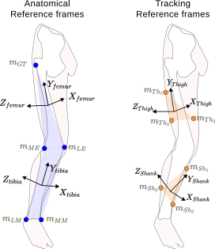
Camera-based movement tracking
Human movement tracking setup
Static calibration is done to find the relationship between the two reference frames:
\[\v{R}_{anatomical}^{tracking}\]
The anatomically relevant joint angles can then be estimated from the tracking reference frames.
\[\v{R}_{tibia}^{femur} = \v{R}_{thigh}^{femur}\v{R}_{lab}^{thigh}\v{R}_{shank}^{lab}\v{R}_{tibia}^{shank}\]
\(\v{R}_{tibia}^{femur}\) can be decomposed into anatomically relevant joint angles.
This process of obtaining the joint angles from the marker measurements, with no other assumptions, is called unconstrained inverse kinematics.
Camera-based movement tracking
Human movement tracking setup
Pros/Cons with unconstrained inverse kinematics:
Pros
- Transparent: every segment pose comes straight from its own markers.
- Ease of implementation: simple and easy to implement with good support.
- Assumes nothing about the joints: whatever the joint does shows up in the result.
Cons
- Anatomical constraints are ignored: nothing imposes the joint structure or fixed segment lengths.
- Soft-tissue artefact passes straight through: nothing constrains it.
- Needs three markers per segment, always: lose one and that segment’s pose is gone for those frames.
- Errors feed into subsequent calculations: errors in joint angles will impact inverse dynamics calculations.
Some of these issues are addressed by the constrained (model-based) inverse kinematics approach: fit a kinematic model with joint constraints to all markers at once, minimising marker error (Lu & O’Connor, 1999). It suppresses artefact and keeps the chain intact, at the price of imposing a joint model that may be incorrect for the given subject.
Camera-based movement tracking
Human movement tracking setup
Constrained inverse kinematics
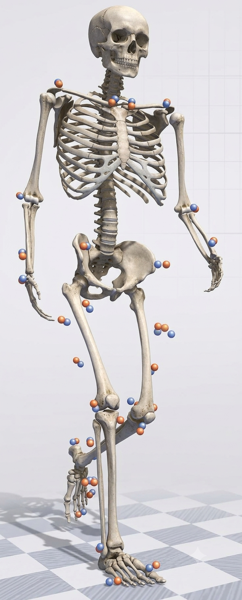
Measured markers (blue) and the model’s markers (orange).
Start from a model of the skeleton: rigid segments of fixed length, joined by joints with a chosen number of DOFs (hinge knee, ball-and-socket hip…). Its configuration is one vector of generalised coordinates \(\v{q}\) — the joint angles themselves.
Markers are placed on the model at the same anatomical spots as on the subject. For any \(\v{q}\), the model predicts where every marker should be: \(\hat{\v{r}}_{m_i}^{A}(\v{q})\).
At each instant, find the pose that puts the model’s markers closest to the measured ones, all at once: \[\v{q}^{*} = \arg\min_{\v{q}} \sum_{i} w_i \left\Vert \v{r}_{m_i}^{A} - \hat{\v{r}}_{m_i}^{A}(\v{q}) \right\Vert^2\] A weighted least-squares fit; the joint constraints are built into the model, so they can never be violated.
What it buys: joint angles come out directly; uncorrelated marker noise is averaged across all markers rather than passed through; a lost marker is tolerated; segments never come apart.
What it costs: the model must first be scaled to the subject; any joint the model gets wrong (a knee that is not a hinge, a lax joint) is forced to behave as the model says — and the residual marker error is the only warning you get; soft-tissue artefact moves markers together, so it is not averaged away — the constraints can only push it into the joint angles the model allows.
Camera-based movement tracking
Unconstrained vs. constrained inverse kinematics
Camera-based movement tracking
Tracking with fiducial markers — what a tag is
A fiducial is a printed pattern with two parts, and each has one job.
The square shape — finds the tag. Four straight edges of a black border, picked out even when small, oblique or partly covered. But every dark square-ish thing passes this test: windows, tiles, the paper it is printed on.
The bits inside — say what it is. Read the 36 cells and check them against the code book: is this a tag at all? (reject the windows), which tag? (thousands of IDs), and which way up? — a bare square is the same turned by 90°, the code is not, so the code says which corner is which.

Olson, E. (2011). AprilTag: A robust and flexible visual fiducial system. Proc. IEEE ICRA, 3400–3407.
Camera-based movement tracking
Tracking with fiducial markers — one tag, one camera, full pose
Why a single image is enough. The tag is a plane of known size with four corners at known positions in its own frame \(W\) — and, being flat, every point on it has \(z_W = 0\).
Put that into our camera model: \[\lambda\,\v{r}_p^{S} = \v{K}_f \m{\v{r}_1 & \v{r}_2 & \v{r}_3 & \v{o}_{W}^{C}} \m{x_W \\ y_W \\ 0 \\ 1} = \underbrace{\v{K}_f \m{\v{r}_1 & \v{r}_2 & \v{o}_{W}^{C}}}_{\v{H},\ 3\times3} \m{x_W \\ y_W \\ 1}\]
The third column of \(\v{R}_W^C\) multiplies \(z_W = 0\) and drops out. What is left, \(\v{H}\), is a \(3 \times 3\) map from tag coordinates to pixels — exactly the planar case we met in Zhang’s calibration, with the tag playing the part of the checkerboard.
Counting: each corner gives two equations (its \(x_S\) and \(y_S\)); four corners give eight. \(\v{H}\) has nine entries but is defined only up to scale, so eight unknowns. The four corners determine \(\v{H}\) — and the code has told us which corner is which.
Olson, E. (2011). AprilTag: A robust and flexible visual fiducial system. Proc. IEEE ICRA, 3400–3407.
Camera-based movement tracking
Tracking with fiducial markers — from \(\v{H}\) to the pose
With the camera calibrated, \(\v{K}_f\) is known, and \(\v{H}\) gives back the pose of the tag in the camera: \[\v{K}_f^{-1}\v{H} = c\m{\v{r}_1 & \v{r}_2 & \v{o}_{W}^{C}}\]
- The scale \(c\): the columns of a rotation matrix have unit length, so \(c\) is read off \(\Vert\v{r}_1\Vert\) and \(\Vert\v{r}_2\Vert\).
- The metric: the tag’s printed side \(d\) turns tag units into millimetres — that is how a single camera knows how far away the tag is.
- The missing column: \(\v{r}_3 = \v{r}_1 \times \v{r}_2\), since the columns of a rotation are orthonormal.
- The sign: \(\pm c\) both fit; the tag must be in front of the camera, which picks one.
- Tidying up: noise means \(\m{\v{r}_1 & \v{r}_2 & \v{r}_3}\) is not quite a rotation; nudge it to the nearest one.
So one tag is a complete marker cluster: position and orientation of the segment it is stuck to, from one camera, with no triangulation and no correspondence problem — the tag tells you its own ID.
Olson, E. (2011). AprilTag: A robust and flexible visual fiducial system. Proc. IEEE ICRA, 3400–3407.
Camera-based movement tracking
Tracking with fiducial markers — the steps, live
Camera-based movement tracking
Tracking with fiducial markers — how the detector finds a tag
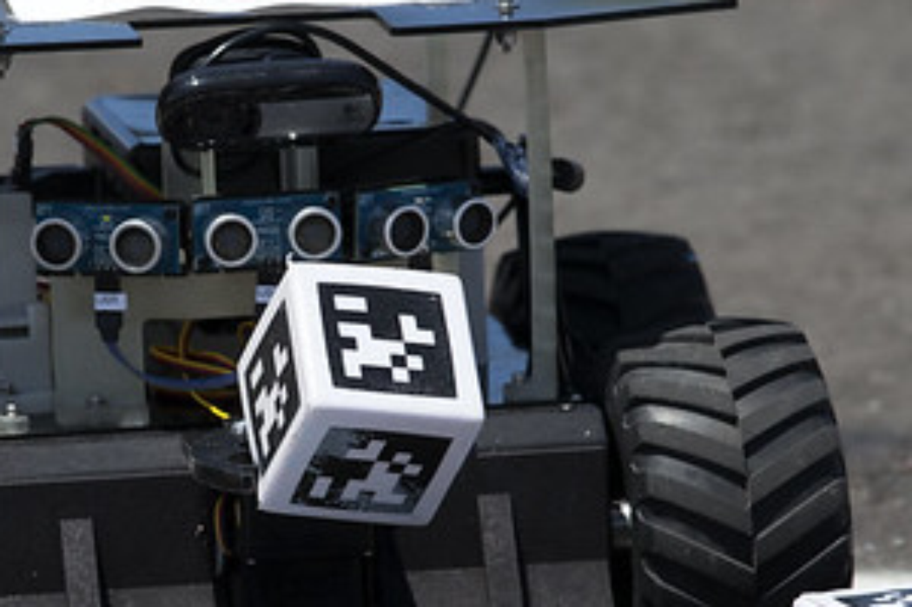
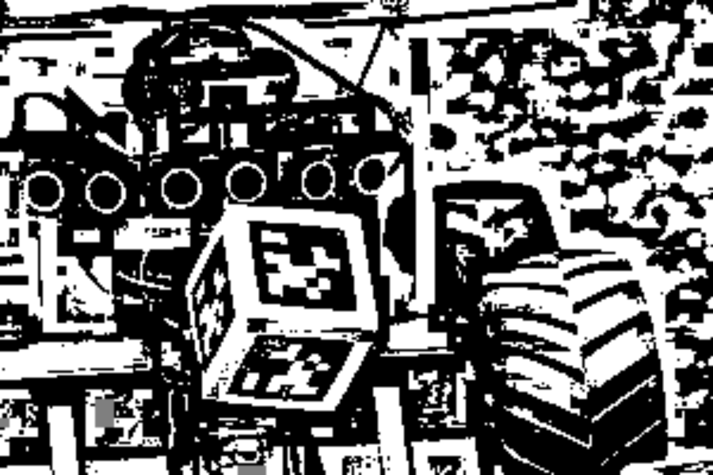
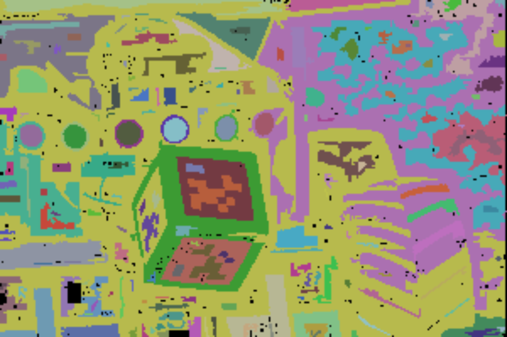
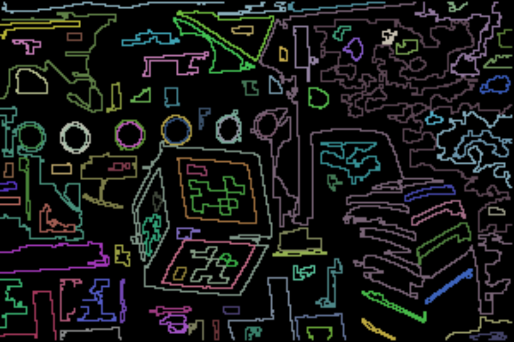
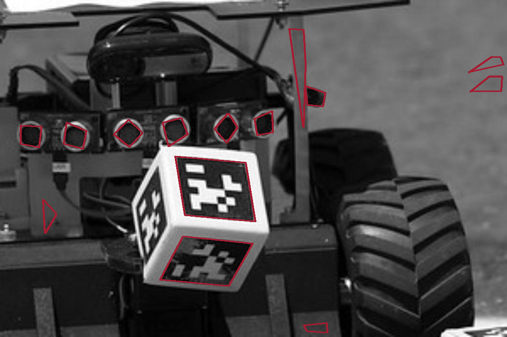
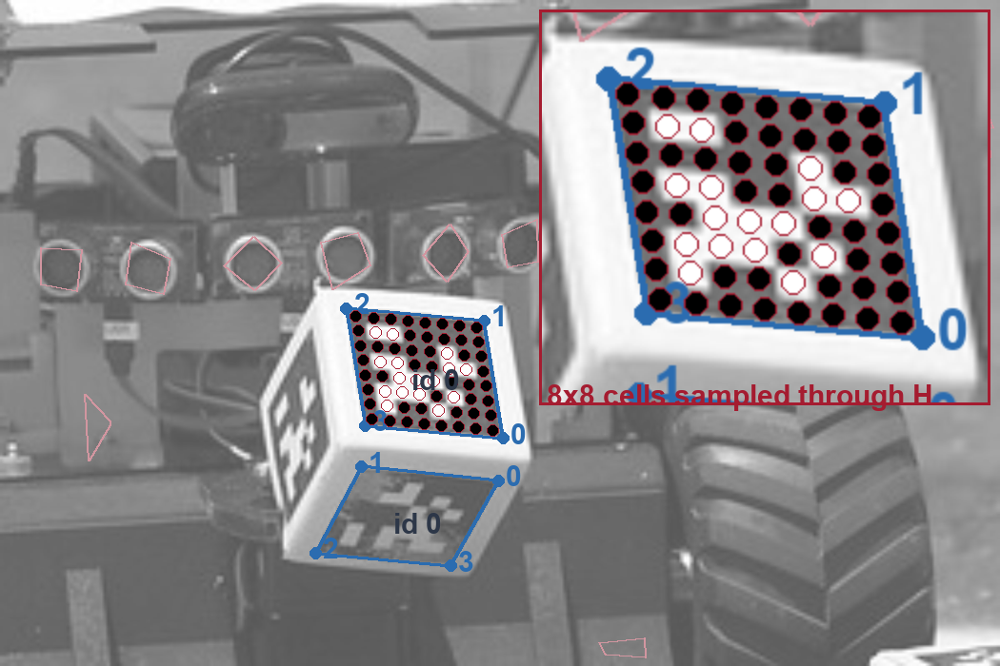
Wang, J. & Olson, E. (2016). AprilTag 2: Efficient and robust fiducial detection. Proc. IEEE/RSJ IROS. Photo: NASA Kennedy, Swarmathon, CC BY-SA 2.0, from the test set of the AprilTag library. Stage images are the library’s own debug output (tag36h11); quads, ids and the sample grid are drawn from its results.
0. The photograph. A robot holding a tagged cube: two tag faces, and some decoys — the round sensor housings, a cable, a tyre. The detector works on the grey-scale image only.
1. Adaptive threshold. Each pixel is called black or white against the darkest and brightest pixels in its own neighbourhood; uneven lighting does not matter. Where the two are too close, flat asphalt, the pixel is left undecided.
2. Connected components. Every blob of black and every blob of white gets a label, one colour each. The tag’s border is one black blob; the quiet zone around it one white blob.
3. Boundaries. The pixels where a black blob meets a white blob, grouped by which pair of blobs they separate. Each closed outline is one candidate for a border.
4. Quads. Each outline is tested for four corners and fitted with four lines. 14 candidates here — the two tag faces, and every sensor housing and cable end that is square-ish enough. The shape alone passes them all.
5. Decode. The homography from each quad’s corners samples the 8 × 8 cells; the 36 bits are matched to the code book. Two accepted, both id 0, with the corner order fixed by the code; the other twelve rejected.
Why this pipeline. The 2011 detector found edges from image gradients and chained line segments into quads. The 2016 redesign replaced that with the threshold-and-components stages above, for speed and better detection of small tags; the tag design and the decode are unchanged.
Camera-based movement tracking
What limits tag tracking — I. Distance
Effect of marker distance on pose estimation
Tag size in image \(s = f d / z\) pixels with pixel error \(\sigma\) pixels.
Example: \(d = 0.10\) m, \(f = 800\) px \(\implies s = 80/z\): 100 px @ 0.8 m, 40 px @ 2 m. \(\implies\) Tag’s \(\text{SNR} \propto \frac{1}{z}\)
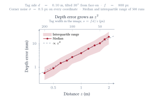
Depth is computed from the tag’s image size \[z = \frac{f d}{s} \;\Rightarrow\; \delta z = -\frac{f d}{s^2}\,\delta s = -\frac{z^2}{f d}\,\delta s\] \[|\delta z| \approx \frac{\sigma\, z^2}{f d}\]
Double the distance, four times the depth error.
Projected corners with 0.5 px of Gaussian noise, pose by the closed form and refinement, median and interquartile range of 500 runs.
Camera-based movement tracking
What limits tag tracking — I. Distance
How a tilt shows up in the image
Foreshortening: a length seen at an angle looks shorter.
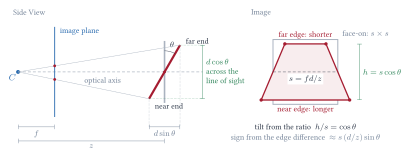
- Tag’s height \(d\) becomes \(d\cos\theta\) and its width at the centre is still \(s = fd/z\).
- The tilt is read from the ratio of two pixel lengths, \(h/s = \cos\theta\).
- The top and bottom edges sit at depths \(z \mp \tfrac{d}{2}\sin\theta\). The difference between the near and far edges is \(\approx s\,(d/z)\sin\theta\).
Camera-based movement tracking
What limits tag tracking — I. Distance
Effect of marker distance on pose estimation
Same tag, same camera, same noise: \(s = 80/z\) px and \(\sigma = 0.5\) px.
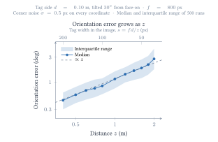
Orientation comes from foreshortening: the tilt is read from the ratio \(h/s = \cos\theta\) of two pixel lengths, each off by about \(\sigma\): \[\delta(\cos\theta) \approx \frac{\sigma}{s} \;\Rightarrow\; \delta\theta \approx \frac{\sigma}{s\,\sin\theta} \;\propto\; \frac{\sigma\, z}{f d}\] Double the distance, twice the orientation error — gentler than depth, because a ratio needs no scale. At \(30^\circ\) and 100 px: \(2 \times 0.5/100\) rad \(\approx 0.6^\circ\); the simulation gives \(0.85^\circ\).
Projected corners with 0.5 px of Gaussian noise, pose by the closed form and refinement, median and interquartile range of 500 runs.
Camera-based movement tracking
What limits tag tracking — II. Face-on
Change the tilt by 5°. How much does the picture change?
The same 100 px tag, drawn from the camera model at six tilts about its horizontal axis.
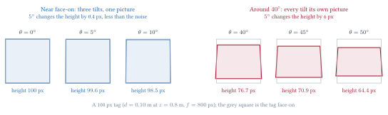
At tag face-on: \(\cos\theta = h/s\). Tag’s true height 100 px, measured 99.5 px because of the noise. \(\cos\theta = 0.995 \implies \theta = 5.7°\).
At an oblique angle:: At 40°, true height 76.7 px, measured 76.2 px: \(\theta = 40.4°\).
This is Module 1’s rule. A sensor gives \(y = \mathcal{F}(x_m) + e_n\) and the noise referred back to the measurand is \(e_n \big/ \frac{\partial \mathcal{F}}{\partial x_m}\). Tag height \(h = s\cos\theta\), the measurand is \(\theta\), the sensitivity is \(\partial h/\partial\theta = -s\sin\theta\) and the noise is \(\sigma\), so \(\delta\theta \approx \sigma/(s\sin\theta)\) A face-on tag has zero sensitivity.
Camera-based movement tracking
What limits tag tracking — II. Face-on
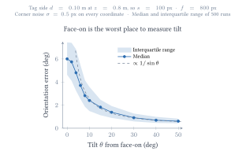
The simulation agrees. Orientation error against tilt for the same tag, with the same corner noise as before.
Error \(\approx\) noise \(\div\) sensitivity: \[\delta\theta \;\approx\; \frac{\sigma}{s\,\sin\theta}\]
The dashed line is this law; it tells us to expect the error to go up as the tag becomes more face-on.
Same model as the distance slides, tag fixed at 0.8 m.
Camera-based movement tracking
What limits tag tracking — III. Edge-on
Turn the tag towards edge-on. What happens to the cells?
The real tag pattern, projected through the camera model at five tilts, with the grid of 1 px squares drawn over it. A small tag, 4 px per cell face-on, so that the pixels can be seen.
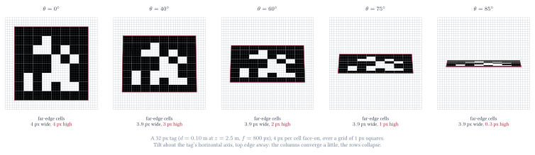
- Both directions change, but not alike. The columns converge by a small amount 4 px to 3.9 px. The rows collapse by \(\cos\theta\): 4 px, 3 px, 2 px, 1 px, 0.3 px.
- Once a row squeezed to very few pixels, any lens blur averages neighbouring black and white cells to grey, impacting payload detection.
Camera-based movement tracking
What limits tag tracking — III. Edge-on
With increasing tilt, reading of the payload bits worsens.
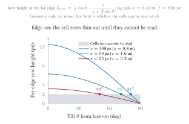
The height of the far row, for three sizes of tag in the image (tags are at different distances).
Usable tilt depends on the tag’s image size: about 80° for 100 px, 70° for 50 px, 50° for 25 px. Olson’s 70° is this number for his camera and tag.
Geometry only; the 2 px threshold is roughly twice a typical lens blur. Figure source: limit-oblique.tex.
Camera-based movement tracking
What limits tag tracking — IV. Motion blur
Move the tag during the exposure. What happens to the cells?
The same tag as before, tilted 30°, sliding sideways while the shutter is open. Each pixel records the average of everything that passed over it.
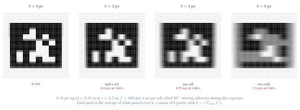
With exposure \(T_{\mathrm{exp}}\) a tag moving at \(v\) across the view travels \(v\,T_{\mathrm{exp}}\) metres, which is \(b = v\,T_{\mathrm{exp}}\,f/z\) pixels in the image. Every edge becomes a ramp \(b\) pixels long.
Tag corners may still be found, but will introduce pose estimation errors due to errors in corner detection.
Payload detection errors occur because the payload cells get averaged out.
Inertial measurement units
What an IMU is
An inertial measurement unit is a chip carrying three accelerometers and three gyroscopes, one of each along every axis of the chip’s own frame \(S\). Most also carry a three-axis magnetometer.
It reports six numbers, typically a few hundred times a second:
- \(\v{a}_S^S(t)\): what the accelerometers feel, in the sensor frame.
- \(\boldsymbol{\omega}_S^S(t)\): the chip’s angular velocity, in the sensor frame.
No reference outside the chip. A camera measures a marker against the camera; an encoder measures a shaft against its housing. An IMU measures its own motion against inertial space. That is its whole appeal, and the source of every one of its limitations.
Built as MEMS: micro-machined silicon, a few millimetres across, costing a few hundred rupees. In every phone, watch, drone, and most wearable movement sensors.
We take the two sensors in turn, then ask what the pair can and cannot tell us about a limb.
Inertial measurement units
Accelerometer — the mechanism
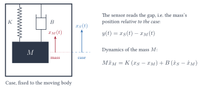
Newton on the mass, with the spring and damper pulling it towards the case: \[M \ddot{x}_M = K\,(x_S - x_M) + B\,(\dot{x}_S - \dot{x}_M)\]
Written for the gap \(y = x_S - x_M\), the thing the plates measure, with \(a_S = \ddot{x}_S\) the acceleration of the case: \[M\ddot{y} + B\dot{y} + K y = M\,a_S \qquad\Longrightarrow\qquad \frac{Y(s)}{A_S(s)} = \frac{M}{Ms^2 + Bs + K}\] The gap is a second-order, low-pass response to the case’s acceleration. That is the entire accelerometer.
Inertial measurement units
Accelerometer — what the model says
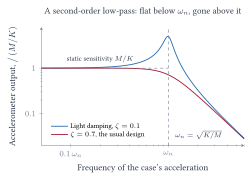
Two numbers fall out of \(Y/A_S = M/(Ms^2 + Bs + K)\):
- Static sensitivity \(= M/K\). Gap per unit of steady acceleration.
- Natural frequency \(\omega_n = \sqrt{K/M}\). Above it, the mass cannot follow and the reading collapses.
They pull in opposite directions. A soft spring gives a large, easy-to-read gap and a low bandwidth; a stiff spring gives bandwidth and a gap too small to see.
MEMS parts choose stiffness: \(\omega_n\) in the kilohertz, so the sensor is flat over anything a limb does, and a gap of nanometres, which is why it is read as a capacitance difference and not as a position.
Module 1 again: this is the dynamic characteristic of the sensor. Everything above \(\omega_n\) is not measured, and near \(\omega_n\) it is exaggerated.
Inertial measurement units
Accelerometer — gravity is in the signal
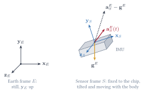
The spring cannot tell the difference between the case accelerating upward and the case sitting still while gravity pulls the mass down. So the accelerometer reports, in its own frame, \[\v{a}_S^S(t) = \v{R}_E^S(t)\left(\v{a}_S^E(t) - \v{g}^E\right)\]
Two consequences, both easy to forget:
- At rest it does not read zero. It reads \(+1\,g\) pointing up, along whichever of its axes happens to be up.
- The reading depends on the orientation \(\v{R}_E^S\) of the chip, which the chip does not know.
The quantity \(\v{a} - \v{g}\) is called the specific force. An accelerometer is a specific-force sensor; “accelerometer” is a slight misnomer that causes real mistakes.
Inertial measurement units
Accelerometer — what does each one read?
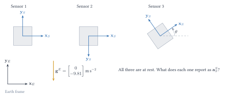
Sensor 1: \(\v{R}_E^S = \v{I}\) \[\v{a}_S^S = -\v{g}^E = \m{0 \\ 9.81}\]
Sensor 2: \(y_S\) points down \[\v{a}_S^S = \m{0 \\ -9.81}\]
Sensor 3: turned by \(\theta\) \[\v{a}_S^S = 9.81\m{\sin\theta \\ \cos\theta}\]
Sensor 3 is the interesting one: the reading contains \(\theta\). Turn it around and a still accelerometer is a tilt sensor.
Inertial measurement units
Accelerometer — tilt from a still sensor
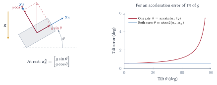
Invert the reading of Sensor 3. Two ways:
- One axis: \(\theta = \arcsin(a_x / g)\). Sensitivity \(\partial a_x/\partial\theta = g\cos\theta\), which goes to zero as the axis approaches vertical. The same slope problem as the face-on tag: near \(90^\circ\) a small error in \(a_x\) is a large error in \(\theta\).
- Both axes: \(\theta = \operatorname{atan2}(a_x, a_y)\). Sensitivity \(g\) everywhere, and \(g\) itself drops out of the ratio. Always do this.
This is how a phone knows which way is up, how a goniometer app measures a joint’s range of motion, and what the range-of-motion lab does: one accelerometer per segment, the subject holds still, read the angle. Holding still is the condition. The next slide is what happens when it is broken.
Inertial measurement units
Accelerometer — a moving sensor
\[\v{a}_S^S = \v{R}_E^S\left(\v{a}_S^E - \v{g}^E\right)\]
Three numbers measured. Unknown: the orientation \(\v{R}_E^S\) and the motion \(\v{a}_S^E\). One equation, two unknowns, and no algebra separates them.
A reading of \(\m{0 & 9.81 & 0}^\top\) is a chip sitting level, or a chip tilted \(90^\circ\) and accelerating sideways at \(1\,g\), or anything in between.
The usual escape is to assume the motion averages to zero over a second or so and low-pass filter the reading, keeping gravity and discarding movement. It works for slow postural tasks. It fails exactly when movement is of interest: during a reach, a step, a heel strike, the “tilt” from a filtered accelerometer swings by tens of degrees that never happened.
What the accelerometer cannot give, the gyroscope can: orientation that does not care whether the segment is moving. At a price, which comes next.
Inertial measurement units
Gyroscope — the mechanism
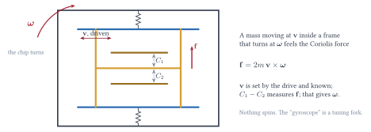
A mass is driven back and forth at a known velocity \(\v{v}\). If the chip turns at \(\boldsymbol{\omega}\), the mass feels the Coriolis force \(\v{f} = 2m\,\v{v}\times\boldsymbol{\omega}\), at right angles to both. Plates on either side read the deflection it causes, exactly as in the accelerometer.
Three such structures, one per axis, give \(\boldsymbol{\omega}_S^S(t) = \v{R}_E^S(t)\,\boldsymbol{\omega}_S^E(t)\): the angular velocity of the chip, in the chip’s own frame. Gravity does not enter. Motion does not confound it. What it measures is a rate, not an angle.
Inertial measurement units
Gyroscope — from rate to angle
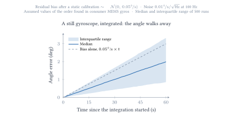
To get an angle, integrate: for one axis, \[\theta(t) = \theta(0) + \int_0^t \omega(\tau)\,\mathrm{d}\tau\]
The integral keeps everything, including the errors. A bias \(b\) in the rate becomes an angle error \(b\,t\) that grows without limit. Noise becomes a random walk, growing as \(\sqrt{t}\).
The plot: a gyro lying still on the bench, integrated. A residual bias of \(0.05^\circ\)/s, small by consumer standards, is \(3^\circ\) a minute. In an hour the angle is meaningless.
Two things follow. Calibrate the bias before every session, with the sensor still. And never trust an integrated gyro angle on its own for longer than the task needs.
Residual bias and noise as stated above the plot, 500 runs: make_imu_drift.py; figure source imu-drift-gyro.tex.
Inertial measurement units
Can an IMU measure position?
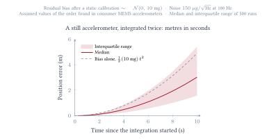
Position needs the acceleration integrated twice, after gravity has been subtracted using an orientation that itself came from integrating the gyro.
A bias \(b\) in the acceleration becomes a position error \(\tfrac{1}{2} b\,t^2\). The plot: a still accelerometer with \(10\) mg of residual bias, about \(0.1\ \mathrm{m\,s^{-2}}\), is \(5\) cm out after one second and metres out after ten.
So, no. Not for more than a second or two, and not without something else to reset it: a camera, a foot known to be flat on the floor at each step, a known start and end point.
What an IMU is good at is orientation. Its position is a by-product nobody should use.
Residual bias and noise as stated above the plot, 500 runs: make_imu_drift.py; figure source imu-drift-accel.tex.
Inertial measurement units
Putting the two together
The two sensors fail in opposite ways:
| Accelerometer tilt | Integrated gyro angle | |
|---|---|---|
| Short term | wrong whenever the segment moves | right |
| Long term | right, as soon as the segment is still | drifts away |
| Reference | gravity, absolute | the starting angle, relative |
Sensor fusion is any rule that takes the gyro for the fast part and the accelerometer for the slow part. The simplest one, the complementary filter, in one line per sample: \[\hat\theta_k = \alpha\left(\hat\theta_{k-1} + \omega_k\,\Delta t\right) + (1 - \alpha)\,\theta^{\text{acc}}_k, \qquad \alpha \approx 0.98\] Mostly the gyro, pulled gently back towards gravity. A Kalman filter is the same idea with the weights chosen from the noise levels instead of by hand.
Gravity fixes two of the three angles. Rotation about the vertical, the heading, leaves gravity unchanged and is invisible to the accelerometer. For that the chip’s magnetometer plays the part of gravity, with the Earth’s field as the reference. Indoors, near steel, motors and wiring, that reference bends by tens of degrees, and so does the heading.
Inertial measurement units
A joint angle from two IMUs
Fuse each IMU to get its orientation in the earth frame, \(\v{R}_{S_1}^E\) on the thigh and \(\v{R}_{S_2}^E\) on the shank. The orientation of one chip relative to the other is \[\v{R}_{S_2}^{S_1} = \left(\v{R}_{S_1}^E\right)^\top \v{R}_{S_2}^E\] and the knee angle is read from it, exactly as it was read from the two marker-defined segment frames earlier in this module.
Two things this quietly assumes.
- The chip’s axes are the segment’s axes. They are not: the chip is stuck on wherever the strap holds, at some unknown angle to the bone. This is the sensor-to-segment alignment problem, solved by a calibration pose or movement, and it is the largest error in IMU joint angles in practice.
- Both headings share a reference. They do only if both magnetometers see the same, undisturbed field. Flexion and extension, about a horizontal axis, survive a bad heading; rotation and abduction do not.
And the strap is skin. Soft-tissue artefact applies to an IMU as it does to a marker, with the added twist that the IMU feels the strap’s own vibration as acceleration.
Inertial measurement units
Calibration, and what to read on the datasheet
Calibration you do yourself
- Gyro bias: leave the sensor still for ten seconds, average each axis, subtract. Before every session; it changes with temperature.
- Accelerometer bias and scale: the six-position test. Lay the sensor on each of its six faces; each axis should read \(+g\), \(-g\) and four zeros. Fit offset and gain per axis.
- Check, don’t assume: after calibrating, the magnitude \(\|\v{a}_S^S\|\) at rest should be \(g\) in every orientation. If it is not, the axes are not orthogonal or the scales are off.
Numbers to find on the datasheet
- Range: \(\pm 2\,g\) or \(\pm 16\,g\); \(\pm 250\) or \(\pm 2000\ ^\circ\)/s. Heel strike can exceed \(\pm 2\,g\); the reading clips and the integral is wrong forever.
- Noise density: \(\mu g/\sqrt{\mathrm{Hz}}\) and \(^\circ/\mathrm{s}/\sqrt{\mathrm{Hz}}\). Multiply by \(\sqrt{\text{bandwidth}}\) for the noise you will see.
- Zero-rate and zero-\(g\) offset, and their drift with temperature: the bias you will be subtracting, and how fast it moves.
- Bandwidth and output rate: the sensor’s own low-pass, and the sampling theorem from Module 1.
Values for the lab’s IMU: to be filled in from its datasheet in the lab handout.
The lab does both calibrations on the kit’s IMU, then uses it for joint range of motion. Keep the calibrated numbers: the drift plots on the previous slides are what the uncalibrated sensor does.
Inertial measurement units
IMUs — in one place
What they measure
- Specific force \(\v{a} - \v{g}\) and angular velocity, in the chip’s own frame, with no external reference.
- A still accelerometer is a tilt sensor; use both axes.
- A gyro is a rate sensor; its angle is an integral and drifts.
- Fused, they give orientation: two angles against gravity, the third against the magnetic field.
What they do not
- Position, beyond a second or two.
- The segment’s frame: only the chip’s.
- Heading, indoors, reliably.
Against cameras
- No line of sight, no lab, no capture volume. Works in a clinic corridor, at home, for a day.
- No position, so no segment lengths, no step length without a model, no absolute location.
- Calibration is yours: bias before every session; sensor-to-segment alignment before every placement.
The measurement question to ask
Is it an orientation I need, about a horizontal axis, over minutes? Then an IMU is the right instrument. Is it a position, a heading, or an hour of unsupervised recording? Then it is not, on its own.